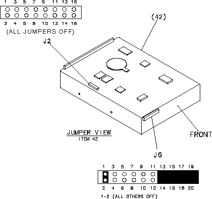

Operating Documentation
Direction 5114045-800, Rev# 10
LightSpeed 4.X Service Information (Advanced)
Operating Documentation |
If you have a need for further information, please visit Seagate’s WEB site at www.seagate.com
Illustration 1: Scan Data Disk Drive

ST336752LW - 36 Gbytes)
| Removal of circuit boards by personnel not performing depot repair will damage components. | |
All drive electronic assemblies are sensitive to static electricity, due to the electrostatically sensitive devices used within the drive circuitry. Although some devices such as metal-oxide semiconductors are extremely sensitive, all semiconductors, as well as some resistors and capacitors, may be damaged or degraded by exposure to static electricity.
Disk drives are fragile. Do not drop or jar the drive. Handle the drive only by the edges or frame.
During installation, turn off the power to the host system.
When operating the drive, always use forced-air ventilation.
When troubleshooting a unit that has voltages present, use caution.
Do not disassemble the drive. Doing so voids the warranty.
If any part is defective, return the entire drive for depot service.
Do not apply pressure or attach labels to circuit board or drive top.
Table 1: Seagate ST36752LW Disk Drive Characteristics
| CHARACTERISTIC | VALUE |
| Formatted capacity | 36.7 Gbytes |
| Maximum data blocks | 71,687,369 (445DCC9h) |
| Cylinders and heads (user accessible) | 18,497 / 8 heads |
| Disk rotation | 15k rpm |
| Operating voltages | +5V, +12V |
| Typical operating current (in LDV mode) | 0.89A, 0.98A |
For Safety and Regulatory Agency Specifications, see Seagate part number 75789512.
Set your SCSI Disk as shown in Illustration 2.
Illustration 2: Scan Data Disk – GE Specific Settings (ST336752LW)

The scan data drive must be configured as shown in Step . The following information is provided for reference only.
Illustration 3 shows a view of the drive’s ID select jumper connectors (at left) and the drive’s J5-auxiliary jumper connector (at right). Both J5-auxiliary and J6 have pins for selecting drive ID and for connecting a remote LED cable. Only one or the other should be used, although using both at the same time will not damage the drive.
Illustration 3: Scan Data Disk - SCSI Jumpers

Illustration 4: DC power connector

Drive does not spin up. Check cables and all jumper settings. Make sure cable pin 1 (edge stripe) matches PCB pin 1.
Drive spins, but no LED on/off activity. Check SCSI ID setting. Set the ID so that each device on the SCSI chain has its own unique ID. See also the next item below. Host I/O controller is usually ID7.
Computer does not seem to recognize the drive. Verify that the drive is enabled by the SCSI host adapter setup utility.